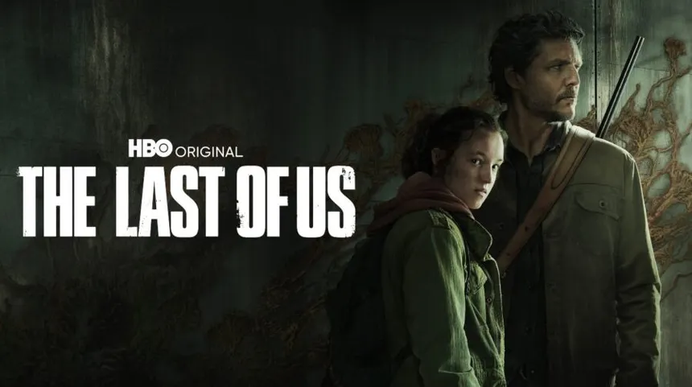

Série
A adaptação da HBO para a história dos jogos.
The Last of Us
A série acompanha Joel e Ellie em um mundo pós-apocalíptico marcado por perigos, sobreviventes e infectados.
Ela apresenta personagens, lugares e acontecimentos conhecidos pelos fãs, e também amplia a história de alguns deles.
- Emissora
- HBO
- Criação
- Craig Mazin e Neil Druckmann
- Estreia
- 15 de janeiro de 2023
- Elenco
- Pedro Pascal (Joel) e Bella Ramsey (Ellie)

Temporadas
Temporada 1 (2023)
Nove episódios que adaptam a história do primeiro jogo.
Temporada 2 (2025)
Sete episódios que começam a adaptar The Last of Us Part II.